Construção de Espaços Verdes
Execução de projetos chave-na-mão — modelação de terreno, plantação, pavimentos e estruturas vivas para instituições, empresas e moradias.
Ver mais →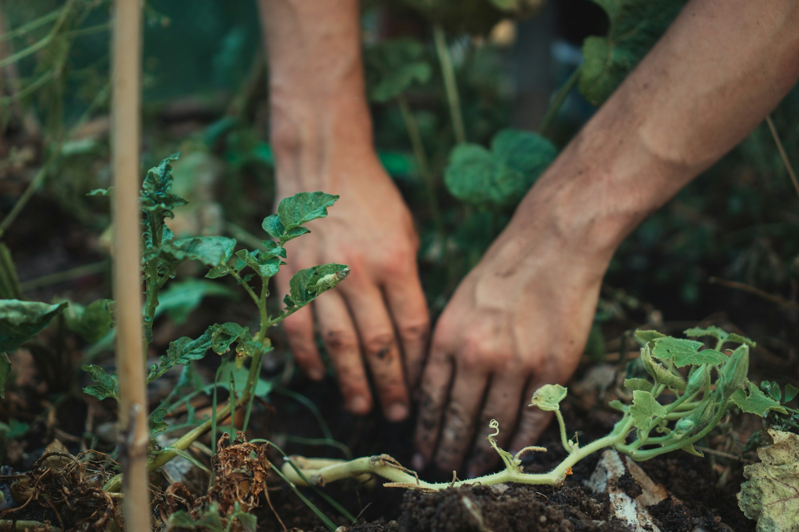
Fundada em 2003, a Mil Raízes nasceu da experiência acumulada do seu sócio gerente nas maiores empresas portuguesas do setor dos espaços verdes — e cresce, ano após ano, ao ritmo dos projetos que abraça.
Resolvemos os desafios dos nossos clientes com base na técnica e na criatividade que nos definem — sempre de olhos postos na redução de custos e no respeito pelo meio ambiente.
Trabalhamos para um conjunto diversificado de clientes — instituições estatais, empresas dos setores da construção civil, indústria e turismo, e clientes particulares — com a mesma exigência técnica e atenção ao detalhe.
Ao longo dos anos, mantivemos um crescimento sustentável: aumentando constantemente a carteira de clientes, modernizando equipamentos e reforçando uma equipa apaixonada pelo que faz.
Do desenho do projeto à manutenção contínua, reunimos sob o mesmo teto todas as competências necessárias para que o seu espaço verde nasça, cresça e perdure.
Execução de projetos chave-na-mão — modelação de terreno, plantação, pavimentos e estruturas vivas para instituições, empresas e moradias.
Ver mais →
Programas regulares de cuidado e conservação — corte, poda, fertilização, controlo fitossanitário e gestão de resíduos.
Ver mais →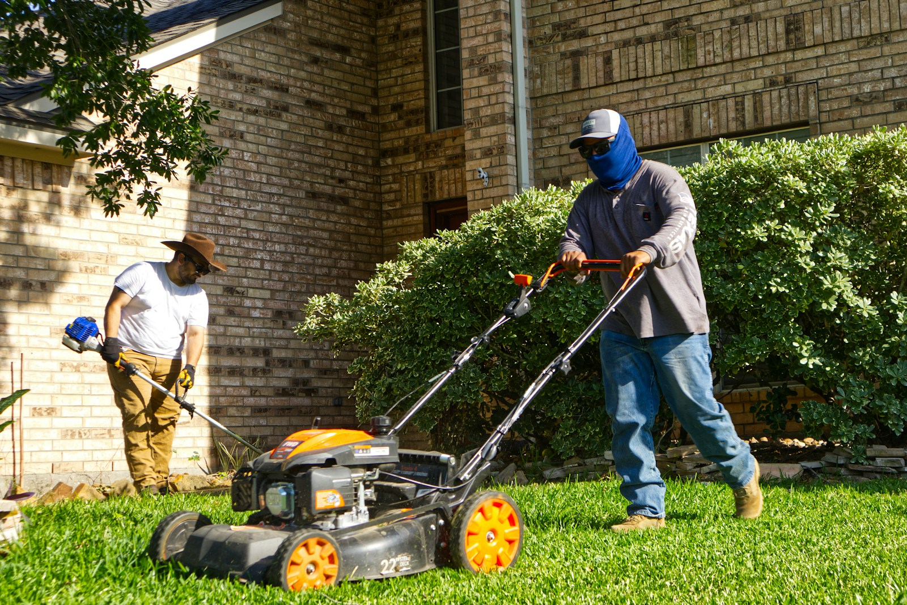
Projeto, instalação e otimização de sistemas de rega — eficiência hídrica, sensores e telegestão para reduzir consumos e custos.
Ver mais →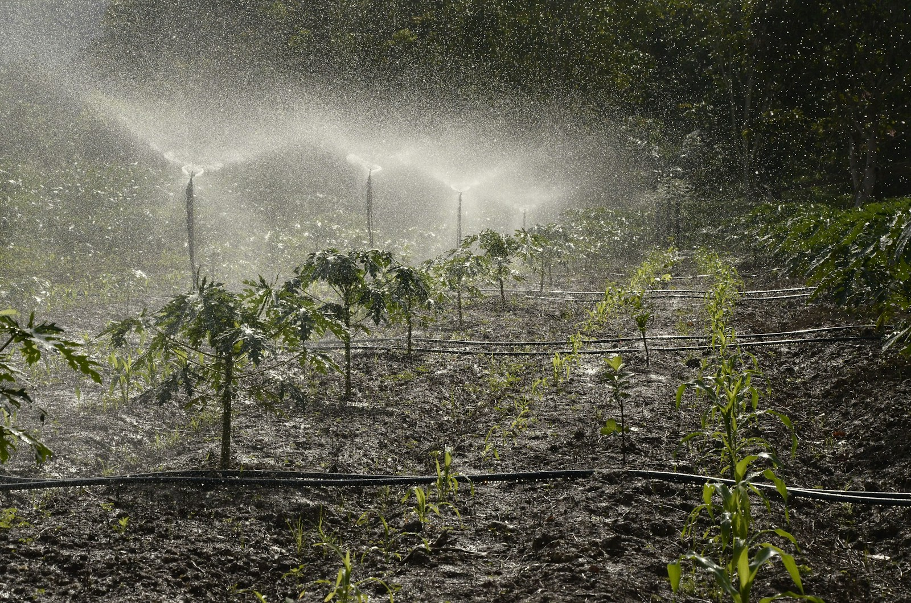
Conceito, plantas-tipo e plano vegetal — criamos jardins com identidade, adaptados ao clima, ao terreno e ao modo de vida de cada cliente.
Ver mais →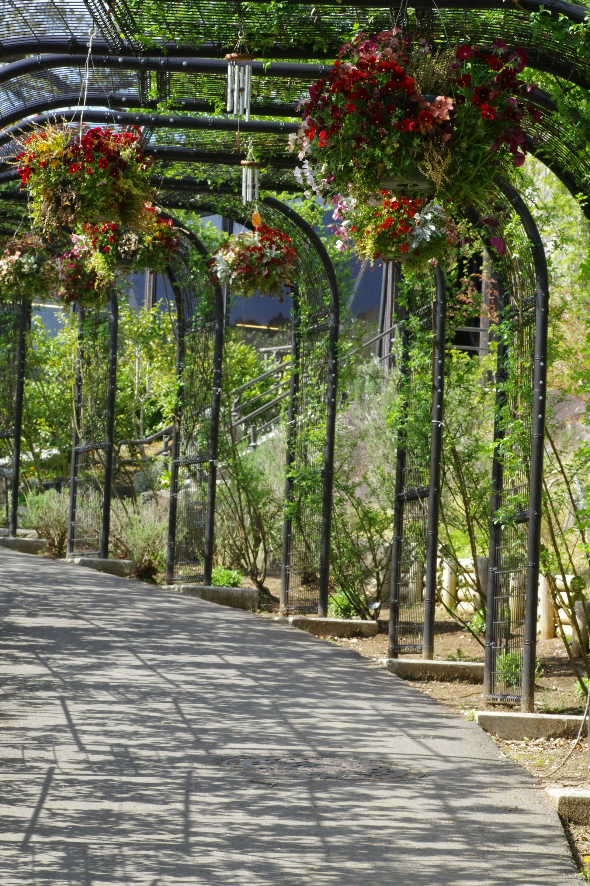
Operação técnica de remoção, transporte e replantação de árvores adultas — preservando património arbóreo em obras e requalificações.
Ver mais →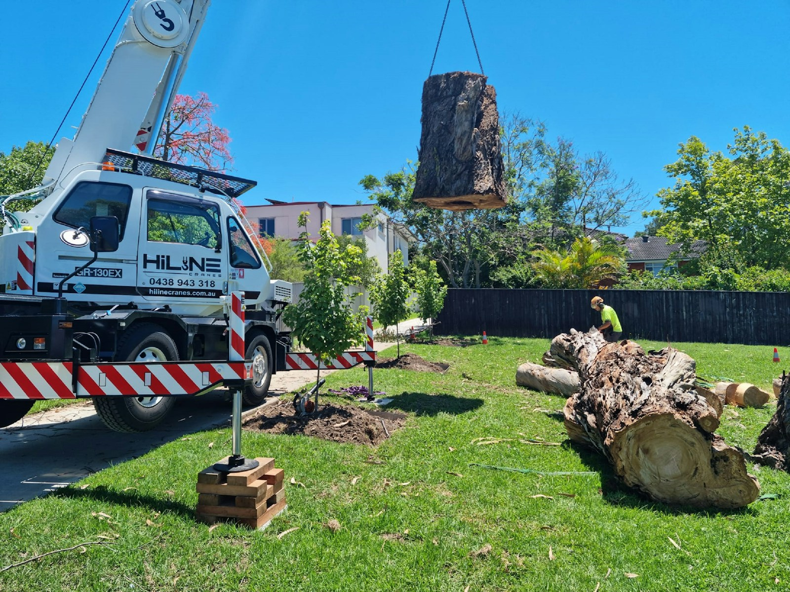
Crescimento sustentável, carteira diversificada, equipamentos cada vez mais capazes — e uma equipa que continua, todos os dias, a fazer mais e melhor.
Uma seleção de projetos realizados nos últimos anos, em contextos públicos, empresariais e residenciais. Cada espaço é um estudo de caso único.
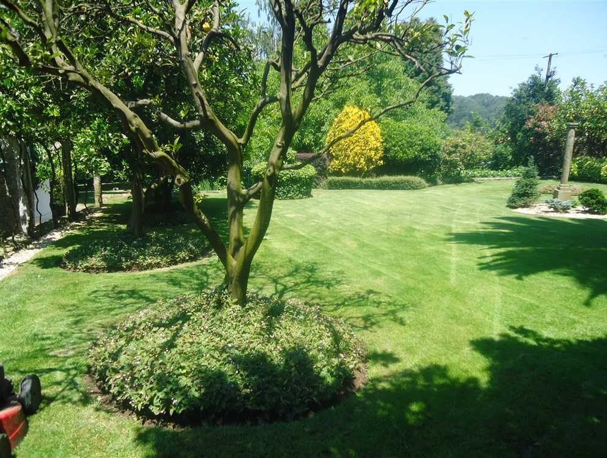
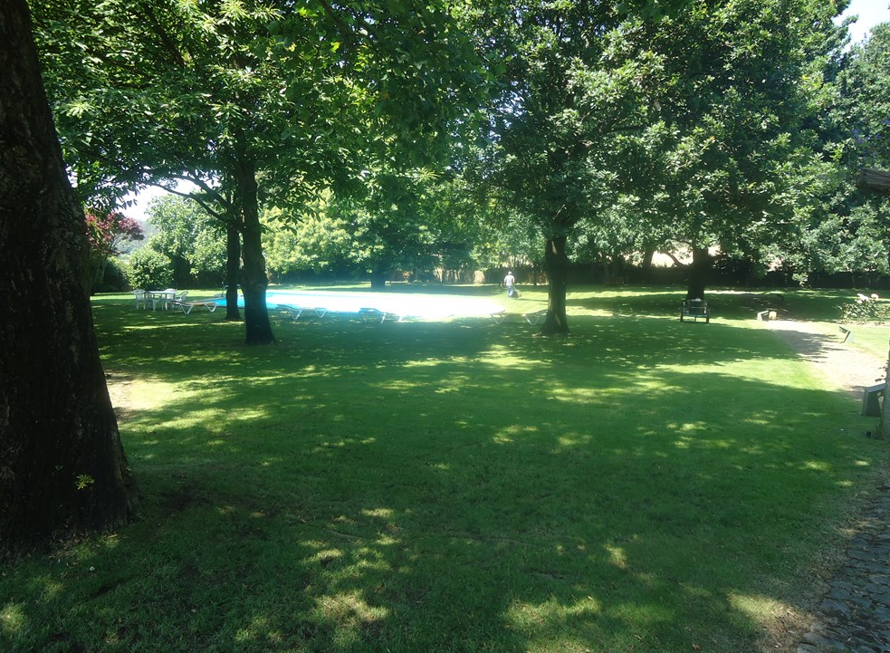
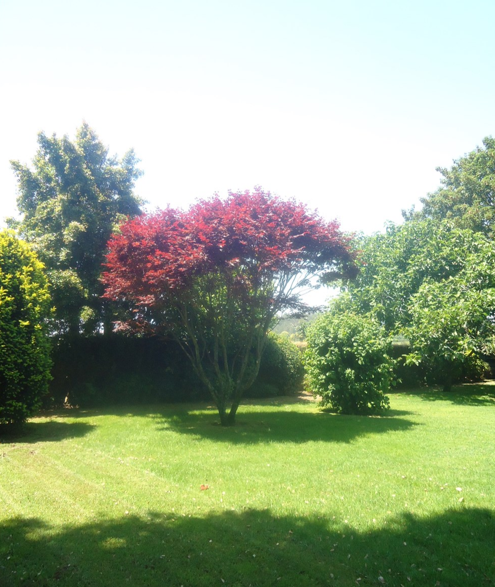
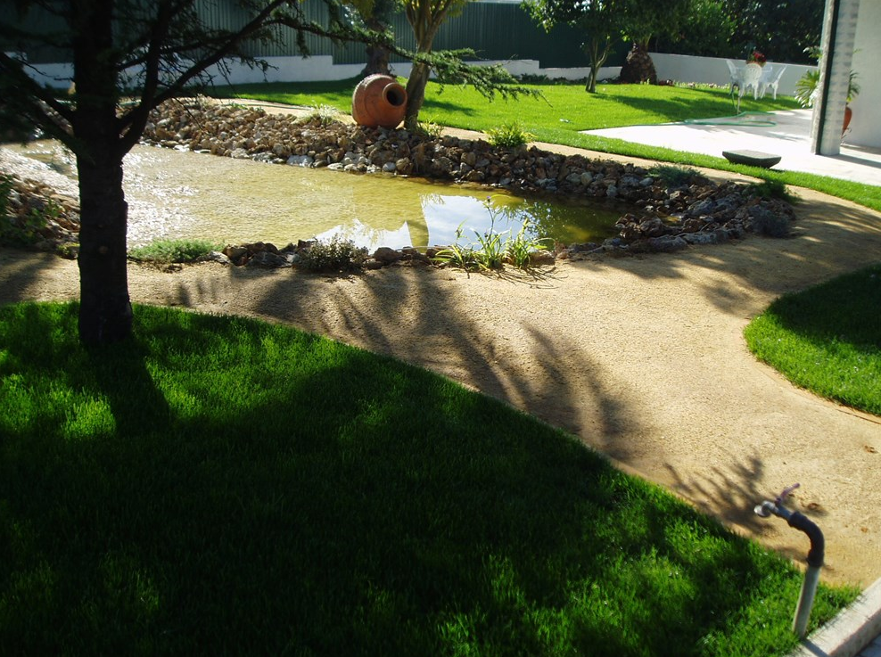
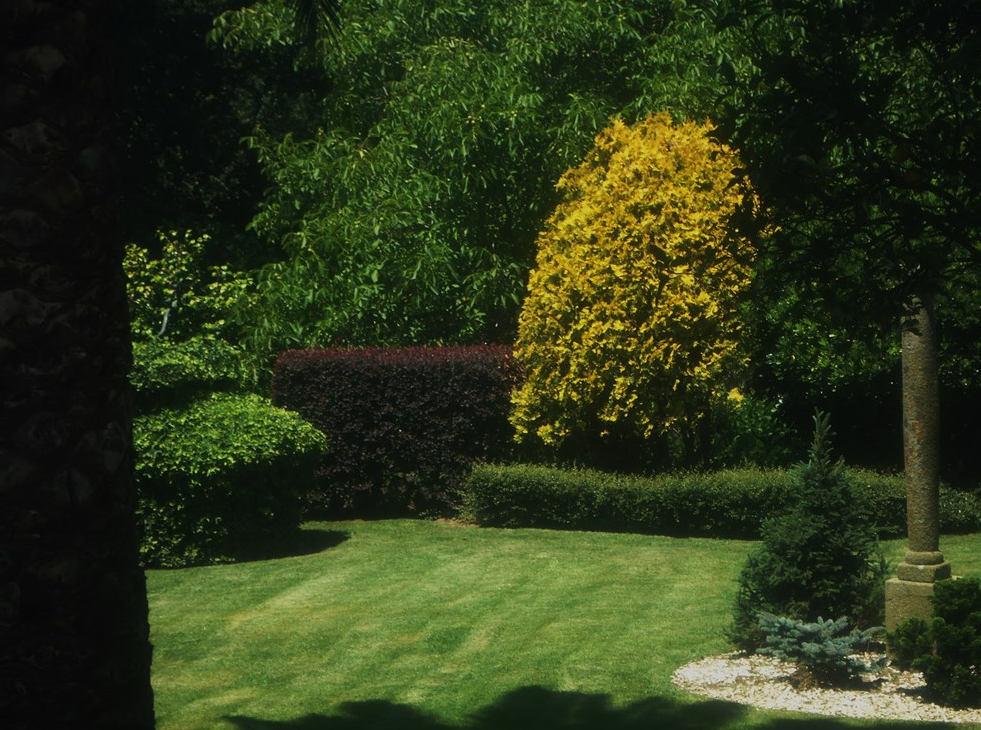
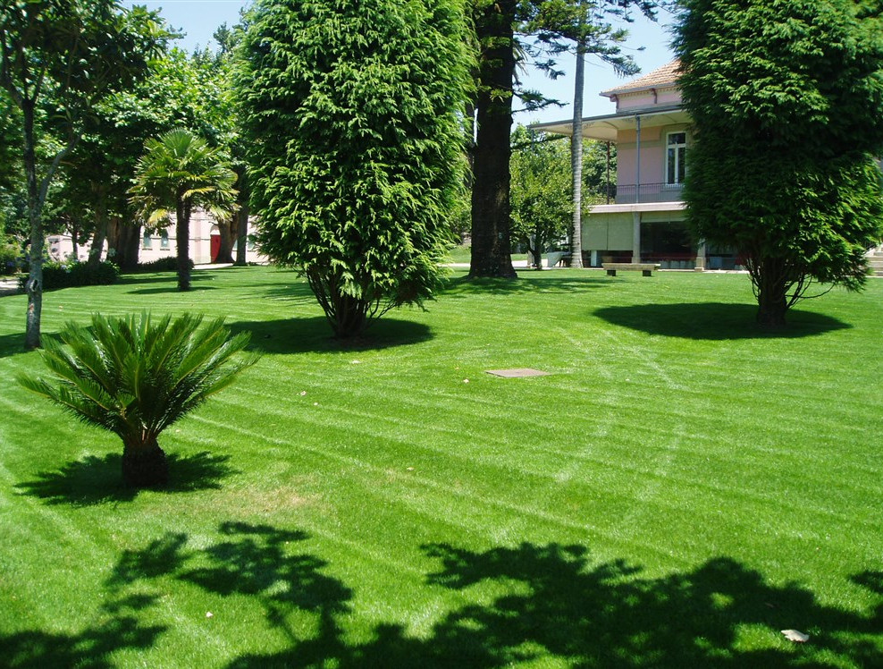
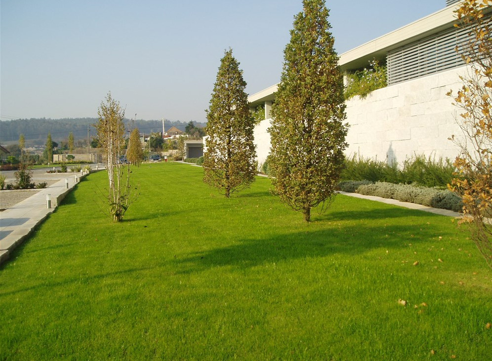
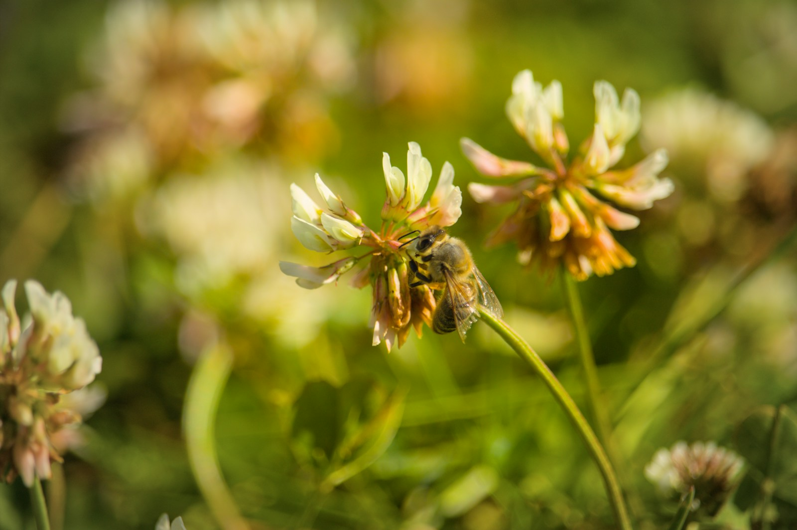
Comprometemo-nos a desenvolver a nossa actividade de forma responsável — visando contribuir para o desenvolvimento sustentável da comunidade e dos colaboradores.
Melhorar a organização e consolidar a sustentabilidade económica da empresa.
Promover a satisfação dos clientes através de padrões elevados em produtos e serviços.
Minimizar a produção de poluição e privilegiar a valorização dos resíduos gerados.
Assegurar o cumprimento dos requisitos legais e melhorar continuamente o desempenho ambiental.
Trabalhamos lado a lado com instituições, grupos hoteleiros, empresas industriais e construtoras — bem como centenas de particulares.
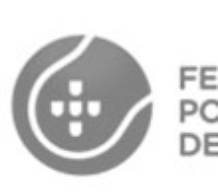
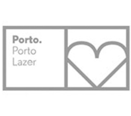
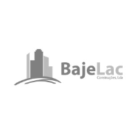
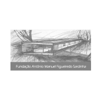
Em poucos minutos, dê-nos uma ideia do que pretende — devolvemos-lhe um orçamento base personalizado.
Estamos sediados em Guilhabreu, Vila do Conde — mas o nosso raio de acção alcança todo o território nacional. Diga-nos onde está; nós aparecemos.
Rua das Minas 1, Guilhabreu
4485-247 Vila do Conde
Segunda a Sexta · 08h00 — 17h00